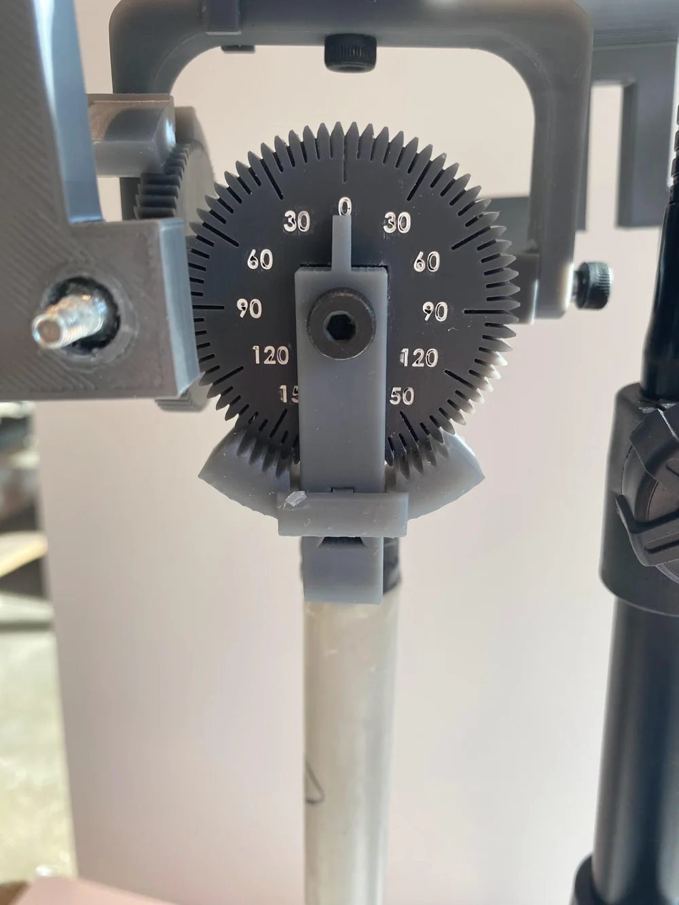

Shriners Children's Hospital
OSCAR: 3D Model Validation Tool
The problemShriners Children's Hospital needed a reliable way to check the accuracy of its 3D motion-capture system.

OSCAR, a child-sized model with lockable, angle-marked joints. Set a pose, read the true angles, and compare them to what the system reports.
01
How it works
- Sized like a 7-year-old’s skeleton, with reflective markers at the pelvis and clavicle.
- Six lockable universal joints move in all three planes.
- Geared dials read each joint angle, so the team knows the true value to compare against.

02
Meeting specs
5°angle resolution
360°transverse range
6lockable joints
| Metric | Marginal | Ideal | Prototype |
|---|---|---|---|
| Resolution, sagittal | 5° | 1° | 5° |
| Resolution, frontal | 5° | 1° | 5° |
| Resolution, transverse | 10° | 1° | 10° |
| Range, sagittal | 127.5° | > 127.5° | 208° |
| Range, frontal | 89° | > 89° | 208° |
| Range, transverse | 140° | > 140° | 360° |